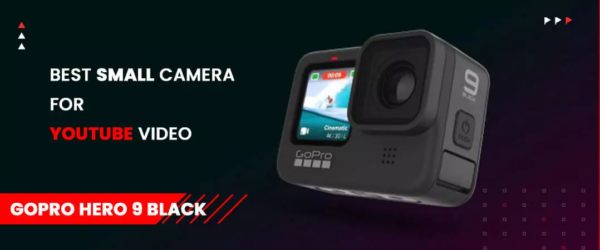
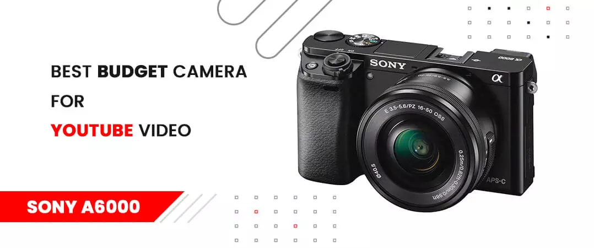
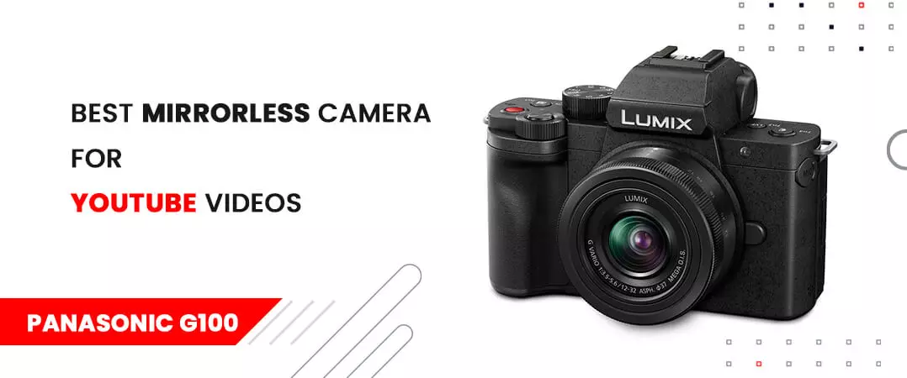
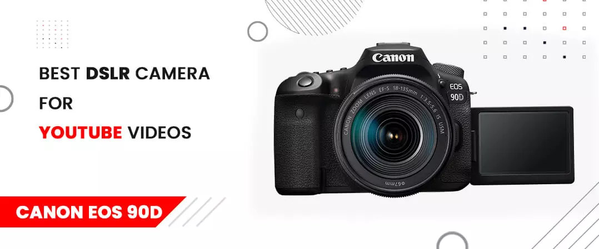
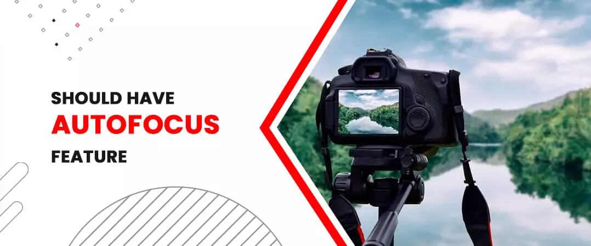
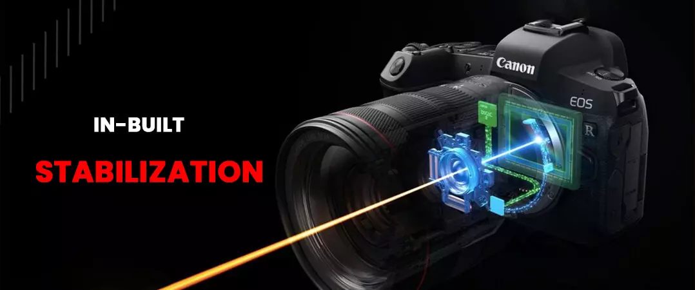
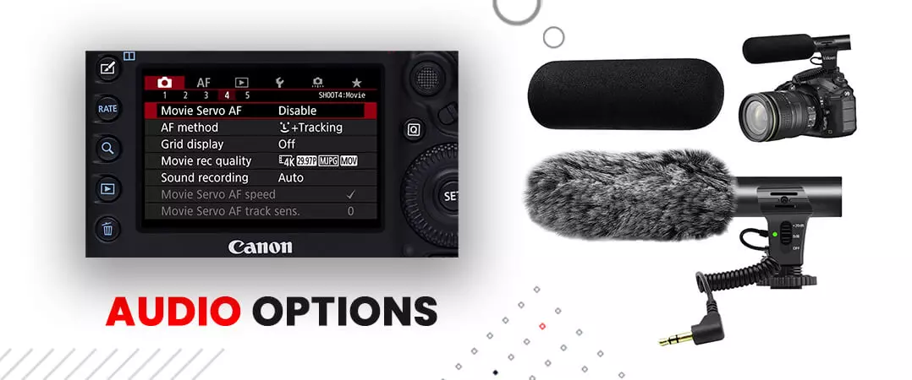
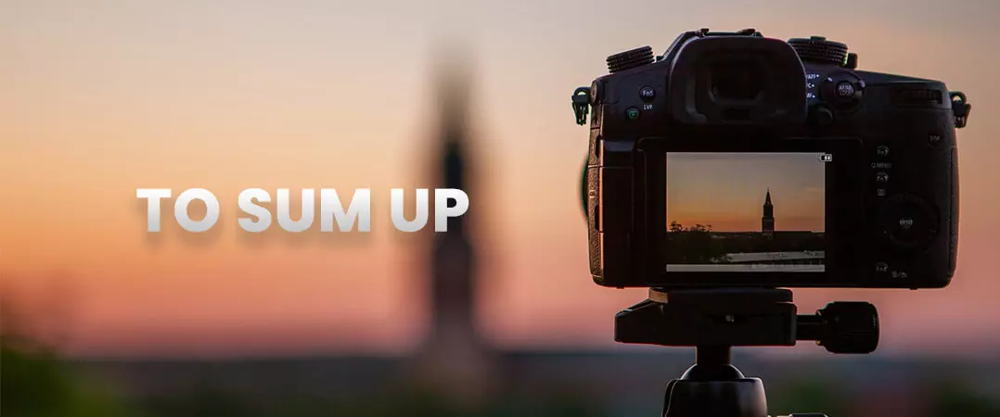

Everyone gets a start on YouTube by creating videos on their smartphone. But as you start growing your audience, their demand for premium quality content grows too. If you want to attract new viewers, you have to reach standards beyond the scope of your phone camera.
Like many YouTubers, you can buy YouTube subscribers to acquire more viewers for your videos. But, if you are of two minds about paid subscribers, you can always start small and buy YouTube likes .
A tripod or well-lit studio can only do so much to improve your content. In the end, it all boils down to the camera that you use.
The choice of your camera will primarily be dictated by the type of content you create. If you are into vlogging, then your needs can lean more towards a compact camera that comes with in-built features designed to make vlogging less complicated. On the other hand, if you like shooting your footage from a single location, your obvious choice would be a DSLR or mirrorless camera. Extreme sports or adventure content creators choose action cameras due to their lightweight nature and small size.
This article has compiled a list of some of the best cameras for YT videos and pictures. We are sure that you will gain clarity on the one that is the best fit for your content needs at the end.
Contents
- 1. Best Compact Camera for YouTube Video: Sony ZV - 1
- 2. Best Small Camera for YouTube Video: GoPro Hero 9 Black
- 3. Best Budget Camera for YouTube Video: Sony A6000
- 4. Best Mirrorless Camera for YouTube Videos: Panasonic G100
- 5. Best DSLR Camera for YouTube Videos: Canon EOS 90D
- 6. Should Have Autofocus Feature
- 7. In-Built Stabilization
- 8. Audio Options
- 9. Live Streaming
- 10. To sum up
Best Compact Camera for YouTube Video: Sony ZV - 1

Sony ZV - 1 was created with a vlogger centric approach. Hence it comes equipped with a wide array of features such as an on-board directional microphone with a windscreen that minimizes noise pollution - eliminating the need to purchase an external mic. Its articulated, well-lit display enables you to view yourself as you capture the footage.
The device makes it easier for vloggers; the compact camera also has settings like 'Product showcase' designed to refocus the elements in the frame and 'background defocus' button that toggles between shallow depth of field and back.
As far as quality goes, the camera delivers in 4K, and there is not much drop in full HD. But the downgrade will be visible in low light. We want to draw your attention to the cameras autofocus system designed to keep moving elements in focus, regardless of whether you shoot content in full HD or 4K. The device can track face and eye movements, and you can configure it to detect humans and animals.
Sony Z1 does its share of correcting camera shakes; hence this camera is ideal for vloggers who travel a lot and don't prefer carrying a tripod or gimbal.
If we talk about the drawbacks, one that stands out the most is the cameras battery life - which in all honesty, is not something to brag about. Also, it tends to overheat a lot, which can cause interruptions if your shoots tend to go longer. The interface can also be tricky to grasp at first glance. But with its cutting edge autofocus, stabilization and lightweight design, the benefits far outweigh the cons – making it one of the best cameras for YouTube videos and pictures.
Also Read: Get the Perfect Lighting for your video
Best Small Camera for YouTube Video: GoPro Hero 9 Black

If we talk about the best action camera for YouTube, few come close, but none has got an edge over GoPro Hero 9 black—lauded as the king of action cameras. It soon became the favourite for Youtubers that feature adventure sports and action-packed content on their channel. The camera is water-resistant, and its small, lightweight design makes it a suitable choice for shooting action content.
Let's look at some more notable features of Hero 9 black. The camera does its fair share and stabilizing content with objects in motion. You can find multiple frame rate options when you shoot in full HD or 4K - making it easier to produce slow-motion footage and capture fast-paced action scenes. Everything in the frame stays focused, thanks to its fixed narrow approach and wide-angle focal length.
Don't get us wrong; the camera is excellent for shooting action videos. But if you look at quality, there are many gaps that we wish were not there. The quality is not lacking, but the drop in footage is noticeable in poor lighting environments. Furthermore, the size that makes GoPro Hero 9 black one of the top contenders is also the reason for its downfall - you see, owing to its more petite frame, you won't find slots for a microphone or HDMI ports. Of course, you can purchase a GoPro media mod and eliminate the shortcomings of the mic, HDMI and other apparatus.
Even after the stated drawbacks, this is still one of the best small cameras for YouTube video. You get everything from a lightweight design, excellent stabilization, water-resistance and multiple screens.
Also Read: Equipment Required for Starting YT Channel
Best Budget Camera for YouTube Video: Sony A6000

An equally hefty price tag often accompanies cameras that come with high-end features. Hence, next up on our list, we have one cheap and best camera for YouTube videos.
Sony A6000 has been around for a while and has gone through multiple models. The camera persists in the market solely due to its growing popularity. You can't expect to shoot footage in 4K or have a dazzling display available on its recent variants – and it is understandable because of its reasonable pricing. That said, you still get your money's worth. With its 24 megapixels aps-c sensor and a sound processor of a 179-point autofocus system, you can get most of your things done without hassle.
Due to Sony E-mount, you have an option to select from multiple lenses, and each one is capable of producing excellent footage. This camera is a prime example of why you don't have to own an expensive, latest, futuristic-looking device to create quality content for your YT channel. Sometimes the subtle approach is the best.
Best Mirrorless Camera for YouTube Videos: Panasonic G100

Are you searching for a camera for YouTube videos? – why not give Panasonic G100 a try. This device also stands its ground as a reliable travel camera for imagery.
The Panasonic G100 has a viewfinder and an attractive 3.69-million dot EVF which you won't find in a compact camera like Sony ZV-1. While primarily this camera is used by YouTubers for vlogging and video shoots, it also comes in handy for photoshoots in a well-lit environment.
One of the features of the G100 that stands out from the rest is the Nokia Ozo-equipped triple microphone. The availability of this feature enables the device to capture sound more clearly than most other cameras on our list. You are also able to separate voices from noise disturbance in the background. Additionally, the camera is capable of face tracking.
What about the video quality? – it is somewhere between good and excellent. You will experience no colour saturation, and the details are intact. If we want to point out one drawback, the camera's larger 1.6x crop in 4k can hinder your shots – this can be a problem if you move around a lot in your videos. Then there is also the issue of the outdated contrast AF system.
But you don't have to worry about the shortcomings if you shoot the majority of your footage in a fixed location.
Also Read: Best Video Editing Software for YT Videos
Best DSLR Camera for YouTube Videos: Canon EOS 90D

The next camera on the list is top-notch, but its capabilities are underused when you use it to produce only YT videos.
The autofocus feature on the Canon EOS 90D is one of the best in its price range - your image doesn't saturate even when there is a loss of light. Of course, lighting is not the primary factor. Your job can get done with devices that perform poorly in low light. The battery life is good, especially if you compare it with the likes of the Nikon D7200.
However, this camera does come with some flaws; one of them is that it lacks image stabilization. Other cameras like the 77D have similar features to the Canon EOS 90D and have in-built image stabilization - something the latter misses.
How to Select the Best Camera for YouTube Videos
Should Have Autofocus Feature

Manual focus certainly has its use. But to make sure that your video is crisp and on point, it would be helpful to select a camera that comes with video autofocus. Having this feature is especially important when you tend to get around a lot when shooting your content – your camera should automatically track your face and eyes in line with your movements.
In-Built Stabilization

Let's get real for a second. Your audience will not appreciate footage that is disoriented and difficult to view. Lucky for you, there are many latest camera models with built-in stabilization features that adjust your movements. In contrast, you can also use a gimbal that can be mounted on any camera for stabilization.
Articulating Screen
It is a different story when you have a team of people backing you up. But if you do handle every aspect of video production by your person, then the articulating screen is your best friend. With the feature, you don't have to worry about flipping out either way on moving to the top. By getting the groundwork right, you can devote your efforts to other areas of your content.
Audio Options

If given a choice, you should always go for a camera with an in-built microphone to capture sound. But we cannot deny an external microphone is more effective to fade out unwanted background noise pollution. Value-added consider Mic imports and horseshoe for mounting your microphone. A headphone socket would be a good addition as well - this helps to keep track of your audio levels.
Live Streaming
You should not bother yourself with this feature if you shoot your video before uploading it on your channel. But for someone who regularly engages with his audience on live broadcasts, it would be in your best interest to find a camera that supports YouTube live streams.
To sum up

The cameras that we have mentioned in this list are what we think is best for YouTube videos and pictures. These take into account multiple needs of a YouTuber and will certainly be worth your investment in the long run.
You can buy YouTube comments to do justice to the efforts you put in creating quality videos.
We hope that you found valuable insights in the time you spent reading our article on the “best cameras for YouTube videos 2021”.
Do you want to add your suggestions to our list?
Feel free to share